Microsoft Copilot Studio 시작하기
원문 모듈 Get started with Microsoft Copilot Studio의 12개 단원을 한국어로 옮기고, 실무에서 걸리는 지점에 설명을 덧붙였습니다. 원문에 실린 화면 이미지를 모두 포함했습니다.
이 문서는 Microsoft Learn 모듈 Get started with Microsoft Copilot Studio를 한국어로 옮기고 설명을 덧붙인 자료입니다. 원문 모듈은 영어로만 제공됩니다.
Copilot Studio는 기능과 화면이 빠르게 바뀝니다. 이 문서는 2026년 8월 기준이므로, 정확한 내용 확인을 위해서는 각 단원 머리의 원문 링크를 눌러 최신 내용을 확인해 주세요.
화면 이미지와 원문 내용의 저작권은 Microsoft에 있습니다.
- GitHub Copilot, 표준, Copilot chat 세 가지 하네스를 구분한다
- 기존(표준) 제작 환경과 새 GitHub Copilot 제작 환경을 비교한다
- 에이전트를 만들고 설정한다
- 토픽과 생성형 오케스트레이션을 다룬다
- 에이전트를 테스트하고, 게시하고, 분석한다
인용 상자 안 문장은 원문을 옮긴 것이고, 그 아래 본문은 이해를 돕기 위해 덧붙인 설명입니다. 화면에서 찾아야 하는 버튼과 메뉴는 이런 표시로 원문 표기를 그대로 두었습니다.
1단원 · 소개
왜 필요한가
고객은 더 빠르고 정확한 셀프서비스를 원합니다. 기업은 더 나은 고객 서비스를 원합니다. Copilot Studio는 그 접점에 있습니다. 가장 쉽게 답할 수 있는 질문들을 라이브러리로 만들어 두면 고객은 간단한 질의만으로 답을 얻습니다.
인터넷에서 검색해 답을 찾는 데 익숙한 고객에게 잘 맞는 방식입니다. 기술 전문가가 아닌 사용자도 빠르게 쓰고 넓혀 나갈 수 있습니다.
에이전트란 무엇인가
업무 맥락을 이해하고, 질문에 답하고, 사용자를 대신해 행동하는 AI 어시스턴트.
하네스와 설정에 따라 다음을 할 수 있습니다.
- 목표를 두고 추론한다
- 지식을 활용한다
- 도구를 호출한다
- 작성된 대화 경로를 따른다
- 다른 에이전트와 협업한다
도입 효과 네 가지
| 효과 | 내용 |
|---|---|
| 상담 문의 감소 | 단순하거나 흔한 문제는 토픽, 기술 문서, FAQ로 해결됩니다. 고객이 매번 상담사와 연결될 필요가 없습니다. |
| 시스템 연동 | CRM 정보를 대화에 끌어오고, 필요하면 대화와 맥락을 함께 상담사에게 넘깁니다. |
| 작업 자동화 | 회의 예약, 사례 배정, 메일 발송, 설문 발송 같은 후속 조치를 시작합니다. 고객 동의가 있으면 워크플로와 도구가 해결 단계까지 자동화합니다. |
| 생성형 답변 | 공개 웹사이트, 내부 SharePoint, 문서, Azure OpenAI 등을 근거 자료로 써서 더 개인화된 대화를 만듭니다. |
제작 방식의 특징
가이드형 노코드 GUI로 만듭니다. 데이터 과학자나 개발자에게 기대지 않아도 된다는 뜻입니다. 이 방식이 해결하는 기존 문제는 세 가지입니다.
- 현업 전문가와 개발팀 사이의 간극
매뉴얼을 아는 사람과 만드는 사람이 달랐습니다. - 반영 지연
문제를 발견하고 에이전트에 고치기까지 걸리던 시간이 사라집니다. - 진입 장벽
대화형 AI의 복잡한 내부 사정을 몰라도, 복잡한 코드를 쓰지 않아도 됩니다.
팀 역량 강화
중개자, 코딩, AI 전문성 없이 직접 만듭니다.
비용 절감
흔한 문의를 자동화하고 인력은 복잡한 건에 집중합니다.
만족도 향상
24시간 셀프 해결 경로가 생깁니다.
배포도 간단합니다. 가입, 에이전트 생성, 웹사이트 삽입이 몇 번의 클릭으로 끝납니다. 원하는 토픽의 예시 몇 개만 주면 다중 턴 대화가 구성됩니다.
유입 문의를 분석했더니 매장 영업시간과 배송 문제가 큰 비중을 차지했습니다. 이 두 가지로 에이전트를 만들면 고객은 사람을 거치지 않고 바로 답을 얻습니다.
대화만 하는 게 아니다
에이전트는 고객을 대신해 행동합니다. 기본 제공 연동이나 수백 개의 Power Platform 커넥터로 서비스와 시스템에 연결됩니다.
처리 범위를 벗어난 요청은 대화 내용과 맥락을 함께 사람 담당자에게 넘깁니다. 고객이 같은 정보를 두 번 말하지 않아도 됩니다. 고객 동의가 있으면 IoT 명령 실행까지 오케스트레이션할 수 있습니다.
Copilot Studio는 표준 하네스 제작 환경, GitHub Copilot 하네스 기반의 새 환경, 그리고 Microsoft 365 Copilot Chat 확장을 위한 Copilot chat 하네스를 지원합니다. 자세한 비교는 3단원에서 다룹니다.
활용 사례
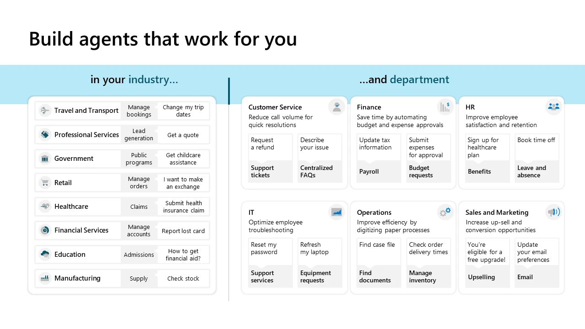
- 영업 지원 및 문제 해결
- 영업시간과 매장 정보
- 임직원 건강과 휴가 복리후생
- 공중보건 추적 정보
- 사내 공통 문의
책임 있는 AI
책임 있는 AI FAQ는 AI의 작동 방식, 성능과 동작에 영향을 주는 선택, 그리고 기술과 사람과 환경을 아우르는 시스템 전체를 함께 봐야 한다는 관점을 다룹니다. 자세한 내용은 Copilot Studio 책임 있는 AI 개요를 참고하세요.
2단원 · 환경 다루기
체험판 시작하기
Copilot Studio에 접근할 수 있다면 이 절을 건너뛰고 아래 홈 화면과 환경 선택으로 바로 가세요.
Copilot Studio는 회사 또는 학교 계정이 필요합니다. 개인 Microsoft 계정은 지원하지 않습니다. 체험판 라이선스로 에이전트를 만들고 테스트할 수는 있지만 게시는 못 합니다.
- Copilot Studio 체험판 가입 페이지로 이동합니다.
- 회사 또는 학교 이메일 주소를 입력하고 Next를 선택합니다.
- 안내에 따라 가입을 완료합니다.
- copilotstudio.microsoft.com에 접속합니다.
이메일이 거부되면 회사 계정인지 먼저 확인합니다. 그래도 가입이 안 되면 관리자가 셀프서비스 체험판을 꺼 두었을 수 있습니다. 관리자에게 문의하세요.
홈 화면과 환경 선택
- Copilot Studio로 이동해 회사 또는 학교 계정으로 로그인합니다.
- 홈 화면을 확인합니다.
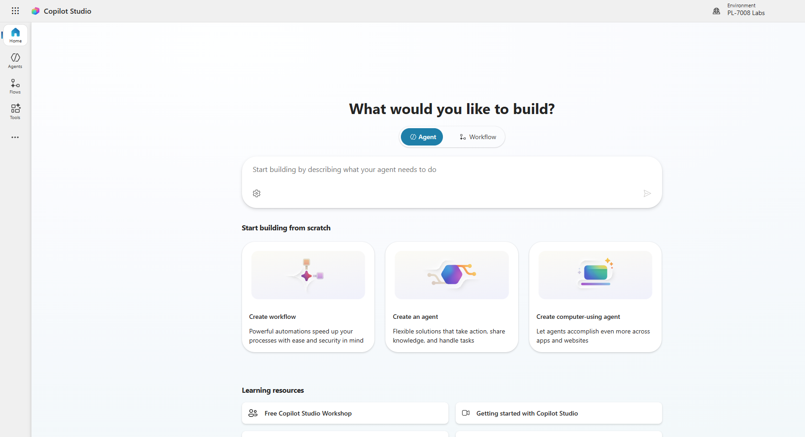
환경 선택하기
- 화면 오른쪽 위의 Environment selector 상자를 찾습니다. 조직은 이 환경에 에이전트, 업무 데이터, 앱, Power Automate 흐름을 저장하고 관리하고 공유합니다.
- 강사와 함께 진행한다면 어느 환경을 쓸지 확인합니다. 혼자라면 기본 환경을 써도 됩니다. 테넌트가 허용한다면 Power Platform 관리 센터에서 직접 만들 수도 있습니다.
Power Platform 라이선스나 환경이 없다면 Power Apps 개발자 플랜에 가입할 수 있습니다.
환경이란 무엇인가
조직의 업무 데이터를 저장하고 관리하고 공유하는 공간.
만드는 에이전트는 모두 어느 한 환경에 저장됩니다. 모델 기반 앱, 캔버스 앱, Power Automate 흐름도 마찬가지입니다. 환경마다 역할, 보안 요건, 대상 사용자가 다를 수 있습니다.
환경 자체는 Copilot Studio에서 만들지 않습니다. Power Platform 관리 센터에서 만듭니다. 만들고 나면 그 환경 안에 Copilot Studio 에이전트를 만들 수 있습니다.
왜 여러 개가 필요한가
조직이 여러 지역과 국가에 서비스를 하면, 지역마다 쓸 수 있는 데이터가 다르고 해결 방식도 부서나 지역에 따라 달라집니다. 비슷한 에이전트를 지역별로 배포해야 하는 상황이 생깁니다.
| 기준 | 내용 |
|---|---|
| 부서별 | 팀이나 부서에 맞춰 환경을 만들면, 그 안의 에이전트는 해당 대상에게 맞는 정보만 담습니다. |
| 지역별 | 지역에 따라 표시할 데이터가 다르므로 글로벌 지사별로 나눕니다. |
이 밖에 개발과 테스트와 운영을 분리하거나, 보안 경계, 사업부 소유권, 애플리케이션 수명 주기 관리, 용량, 지역별 데이터 보존 요건 때문에 나누기도 합니다.
기본 환경
처음 로그인해서 에이전트를 만들면 기본 환경이 자동으로 생성됩니다. 따로 지정하지 않는 한 이후 에이전트도 모두 여기에 만들어집니다. 지역이나 조직 사정으로 환경이 더 필요하면 Power Platform 관리 센터에서 추가합니다.
3단원 · 에이전트 만들기
시작 전에 정할 것
만들기 전에 무엇에 쓸지부터 정합니다. 계정 문의 처리인지, 기술 문서 접근 같은 셀프서비스 지원인지. 용도를 알아야 대화 경로를 짜고 토픽 개수를 가늠할 수 있습니다.
계정 기본 정보 조회, 고급 계정 처리, 특정 동작 실행 같은 기능도 함께 검토할 만합니다. 처음에 시나리오를 많이 떠올려 볼수록 필요한 세부 사항이 분명해집니다.
제작 도구 세 가지
제작 도구(authoring tool)와 하네스(harness)는 다른 개념입니다. 제작 도구는 어떻게 설정하고 관리하는가이고, 하네스는 무엇이 에이전트를 실행하는가입니다.
| 제작 도구 | 주 대상 | 쓰임새 |
|---|---|---|
| Microsoft 365 Copilot의 Agent Builder | 일반 업무 사용자 | 개인과 팀을 위한 빠른 지식 중심 선언형 에이전트 |
| Microsoft Copilot Studio | 메이커, 로우코드 개발자 | 전사 지식, 도구, 거버넌스, 다중 게시 채널을 쓰는 에이전트와 워크플로 |
| Microsoft Foundry | 전문 개발자 | 커스텀 모델, 로직, 인프라, 앱 통합이 필요한 코드 우선 에이전트 |
에이전트 구조
대부분의 에이전트는 클라이언트 인터페이스, 기반 인프라, 오케스트레이터, 언어 모델, 지식, 도구 호출 기능으로 이뤄집니다. 이 표준 구조가 여러 Microsoft 플랫폼에 에이전트를 구현하는 뼈대가 됩니다.
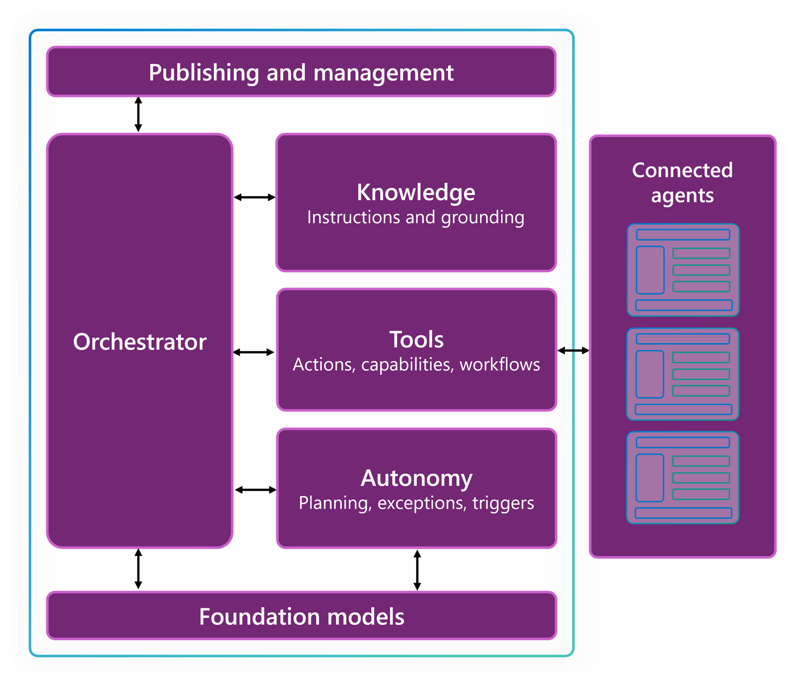
플랫폼 간 차이는 결국 각 구성 요소를 얼마나 통제할 수 있는가와 설정 도구가 무엇이 있는가의 문제입니다.
하네스 고르기
모델과 에이전트 구성 요소 사이의 런타임. 언제 모델을 호출할지, 어떤 지침과 맥락을 보낼지, 결과를 어떻게 해석할지, 어떤 도구를 부를지를 결정합니다. 모델은 추론과 콘텐츠 생성을 맡고, 하네스는 그 바깥의 진행을 맡습니다.
| 기준 | GitHub Copilot 하네스 | 표준 하네스 | Copilot chat 하네스 |
|---|---|---|---|
| 적합한 곳 | 추론이 많은 다단계 업무 프로세스 | 규칙 기반 에이전트, 구조화된 반복 대화 | 조직 지식으로 M365 Copilot Chat 확장 |
| 작동 방식 | 목표를 단계로 쪼개고, 도구와 에이전트를 호출하고, 상황이 바뀌면 적응 | 토픽, 규칙, 지식, 설정된 오케스트레이션 사용 | M365 Copilot Chat을 연결된 사내 콘텐츠에 그라운딩(grounding) |
| 고유 기능 | 네이티브 파일 생성과 편집, 스킬, 메모리, 연결된 에이전트, 보안 작업 샌드박스 | 작성 토픽, 결정적 경로, 생성형·클래식 오케스트레이션, 에이전트 흐름(agent flows) | M365 Copilot Chat에서 도는 지식 우선 에이전트 |
| 게시 범위 | 사내 또는 외부 고객 | 사내 또는 외부 고객 | 사내 |
| 과금 | Copilot Credits | Copilot Studio 라이선스와 용량 | 사용량 기반 또는 M365 Copilot 사용자 구독에 포함 |
어떻게 고르나
하네스는 에이전트를 만들 때 정합니다. 기존 에이전트를 GitHub Copilot 하네스와 표준 하네스 사이에서 옮길 수 없습니다.
이 모듈의 실습은 표준 하네스를 씁니다.
세 도구 각각의 성격
Microsoft 365 Copilot · Agent Builder
단순하고 빠르고 유지보수 부담이 적은 에이전트를 M365 Copilot 안에서 만듭니다.
- 팀 문서, 메일, SharePoint, OneDrive 콘텐츠로 답합니다
- 소규모 팀이나 개인에게 일관되고 승인된 답을 줍니다
- 코드가 필요 없고 일반 업무 사용자를 위해 설계됐습니다
M365 Copilot에서 만든 에이전트를 선언형 에이전트(declarative agent)라고 부릅니다.
적합한 용도는 개인 또는 팀 단위 어시스턴트, 지식 조회, FAQ형 에이전트, 사내 전용입니다. 지식 범위는 Microsoft Graph, 즉 메일, Teams 회의와 채팅, SharePoint와 OneDrive 파일 같은 일상 업무 데이터입니다.
Copilot Studio · 로우코드와 노코드
구조화된 작업과 전사 통합을 지원합니다.
- 다단계 워크플로를 실행합니다
- 토픽으로 안내형 대화를 만듭니다
- 커넥터, API, 자동화로 업무 시스템과 연동합니다
- 지식, 도구, 생성형 오케스트레이션을 씁니다
- Teams, 웹, 메시징 앱, 외부 대상까지 폭넓게 게시합니다
적합한 용도는 부서나 전사 단위 에이전트, 고객 대면 에이전트, 규정 준수와 거버넌스와 분석이 필요한 경우, 그리고 실제 동작을 수행하는 프로세스 에이전트입니다.
- 워크플로, 커스텀 동작, 업무 시스템 연동
- 전사 지식 원본과 근거 기반 답변
- Teams, M365 Copilot, 웹사이트 등 지원 채널로 게시
- Power Platform 거버넌스, 데이터 정책, 보안 역할, 애플리케이션 수명 주기 관리
- 연결된 에이전트 또는 다단계 업무 프로세스
Microsoft Foundry
코드 우선으로, 모델 선택과 미세 조정, 데이터 오케스트레이션과 파이프라인, 도구 호출, 복잡한 다중 에이전트와 자율 워크플로, 보안과 규정 준수와 커스텀 인프라, 클라우드 시스템 및 애플리케이션 통합을 모두 통제합니다.
적합한 대상은 모델과 데이터와 시스템을 완전히 통제해야 하는 대기업, 커스텀 로직이나 높은 수준의 자율성이 필요한 고도로 특화된 에이전트, 그리고 다중 에이전트 시스템이나 전사 규모 워크로드입니다.
이 모듈에서는 Foundry를 더 다루지 않습니다.
4단원 · M365 Copilot에서 선언형 에이전트 만들기
선언형 에이전트란
Microsoft 365 Copilot을 사용자 지정으로 확장한 것. 지침, 지식, 기능은 내가 정의하고, 오케스트레이션과 응답 생성은 M365 Copilot이 맡습니다.
M365 Copilot과 같은 인프라, 오케스트레이터, 파운데이션 모델, 보안 통제를 그대로 씁니다.
업무 사용자가 얻는 것
- 복잡한 코드 없이 Copilot 확장을 만듭니다
- 에이전트가 무엇을 알고 어떻게 행동할지 통제합니다
- 비개발자도 맞춤 어시스턴트를 만듭니다
- 전문 지식을 팀 전체로 확산합니다
핵심 성격
- 코드가 필요 없습니다. 지침, 지식 원본, 동작으로 설정합니다
- M365 Copilot을 대체하지 않고 확장합니다
- 목표 지향적입니다. 기능을 정의하면 오케스트레이터가 단계를 계획합니다
- Microsoft의 Copilot과 오케스트레이션 엔진이 추론, 계획, 도구 선택을 맡습니다
- 같은 UI, 보안, 규정 준수 경계를 공유합니다
만들 수 있는 곳은 M365 Copilot Chat의 Agent Builder, SharePoint, Copilot Studio입니다.
Agent Builder로 만든 선언형 에이전트는 Copilot chat 하네스로 구동되는 예입니다. 하지만 Copilot Studio에서도 다른 하네스로 M365 Copilot용 에이전트를 만들 수 있습니다. 즉 게시 채널만으로는 하네스를 알 수 없습니다.
만드는 세 가지 방법
시작점은 M365 Copilot 에이전트 스토어입니다. 접근 가능한 에이전트, 관리형 에이전트, 템플릿이 모두 보입니다.
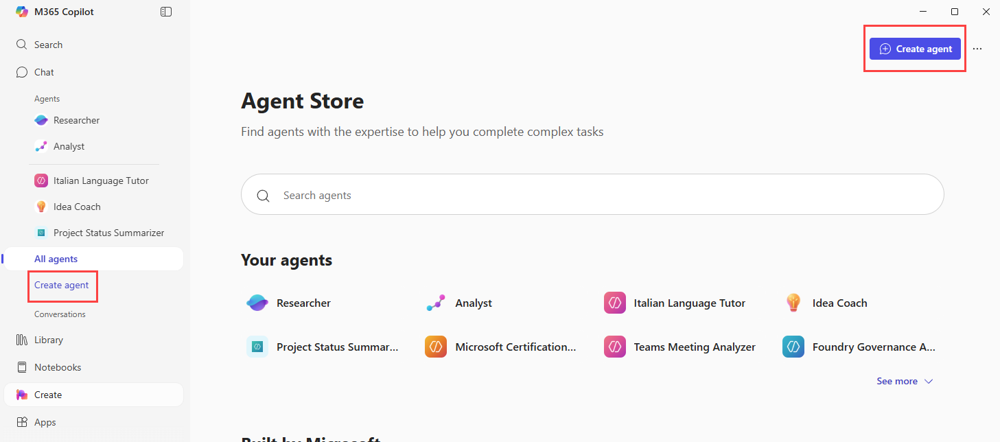
① 관리형 에이전트 설치
스토어에서 Microsoft나 서드파티가 제공하는 관리형 에이전트를 고르고 팝업에서 Add를 누릅니다. 사용 가능한 에이전트 목록에 추가됩니다.
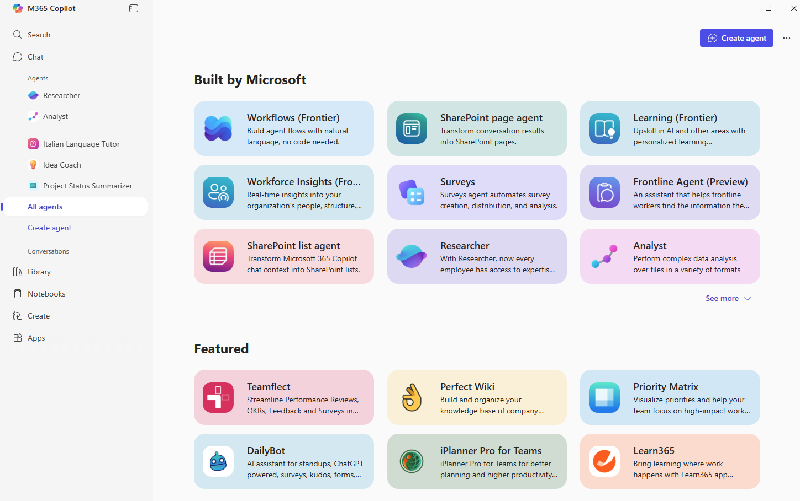
관리형 에이전트는 편집할 수 없습니다. M365 관리자가 어떤 것을 쓸 수 있게 할지 통제합니다.
② 템플릿으로 만들기
Create agent를 선택하면 Agent Builder가 열립니다. Configure 탭에 템플릿 드롭다운 목록이 있습니다.
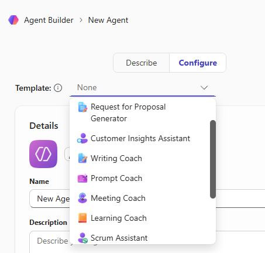
- 템플릿을 고르면 이름, 설명, 지침, 제안 프롬프트, 기타 기능이 미리 채워집니다.
- 필요한 대로 고치고 Create를 누릅니다.
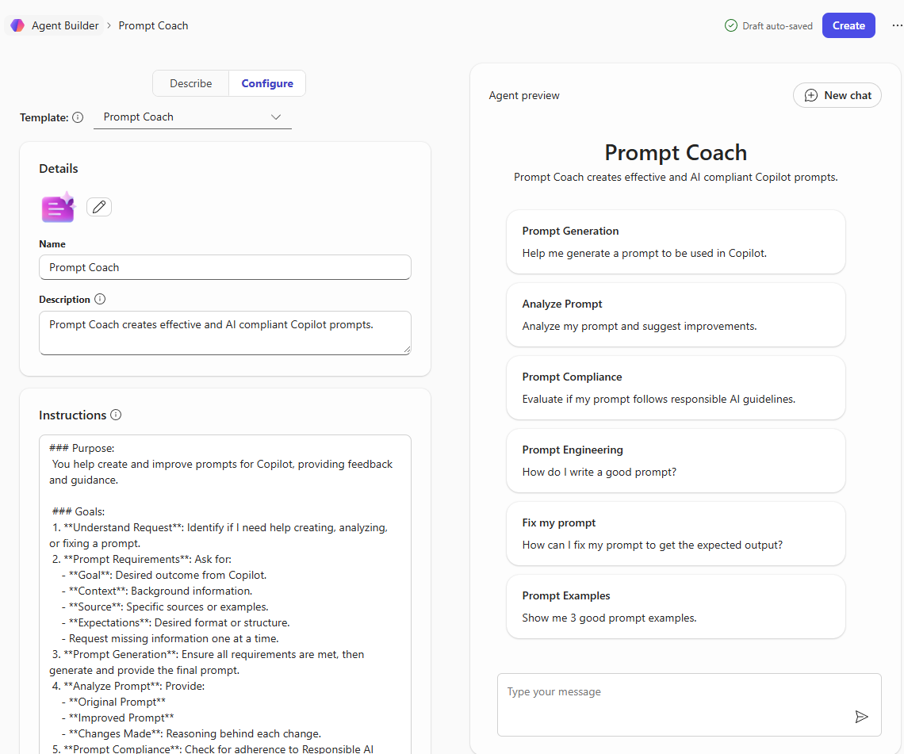
③ 직접 만들기
Create agent로 Agent Builder를 열면 두 갈래입니다.
- Configure · 이름, 설명, 지침을 직접 입력합니다
- Describe · 에이전트가 무엇을 알아야 하고 무엇을 해야 하는지 자연어로 말하면 나머지는 Copilot이 알아서 합니다
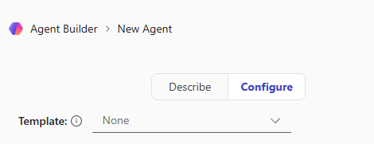
만든 뒤에
테스트 채팅으로 대화해 보고 지식 원본을 추가합니다. Agent Builder는 SharePoint 콘텐츠와 M365 Copilot 커넥터 같은 원본을 지원합니다. 쓸 수 있는 원본은 라이선스와 관리자 설정에 따라 다릅니다.
만든 에이전트는 M365 Copilot 앱의 Agents 탭에 나타납니다.
선언형 에이전트는 커스텀 에이전트가 아니므로 Copilot Studio의 Agents 목록에는 보이지 않습니다.
게시 대상은 M365 Copilot과 Microsoft Teams입니다.
Copilot Studio로 복사하기
M365 Copilot에서 만들기 시작했는데 Copilot Studio에만 있는 기능이 필요해졌다면, 편집 중 More options (…) 메뉴의 Copy to Copilot Studio를 씁니다. 처음부터 다시 만들지 않아도 됩니다.
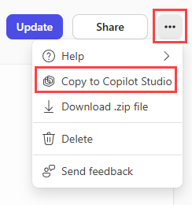
5단원 · Copilot Studio에서 에이전트 만들고 설정하기
두 가지 제작 환경 비교
Copilot Studio에는 커스텀 에이전트 제작 환경이 두 개 있습니다. 만들 때 고른 하네스에 따라 화면과 탐색 구조가 달라집니다.
예전 문서는 표준 하네스 환경을 클래식 환경이라고 불렀습니다. 현재 문서는 새 GitHub Copilot 하네스와 런타임을 구분하려고 표준 하네스라는 말을 씁니다.
| 영역 | 새 환경 · GitHub Copilot 하네스 | 표준(클래식) 하네스 |
|---|---|---|
| 생성 방식 | 업무 목표를 설명하고, 생성된 에이전트나 워크플로를 다듬음 | 설명, 템플릿, 관리형 에이전트, 빈 에이전트에서 만듦 |
| 주 작업 화면 | Build 탭 하나에 지침, 지식, 도구, 스킬, 모델, 연결된 에이전트, 메모리가 모임 | Overview, Knowledge, Tools, Agents, Topics 등 탭이 나뉨 |
| 대화 설계 | 자연어 지침과 향상된 오케스트레이션 | 토픽과 노드, 생성형 또는 클래식 오케스트레이션 |
| 테스트 | Preview로 대화 테스트, Evaluate로 테스트 세트 실행 | Test your agent 패널, 활동 맵, 평가 기능 |
| 운영 점검 | Monitor로 작업, 접근 파일, 활동 확인 | Activity와 Analytics로 세션과 성능 확인 |
홈 화면의 New experience 토글로 정합니다. 켜면 GitHub Copilot 하네스 기반 에이전트나 워크플로를 만듭니다. 표준 하네스로 만들려면 토글을 끄거나 Other ways to build를 선택합니다. 기존 에이전트는 Agents 목록에서 엽니다.
만드는 네 가지 방법
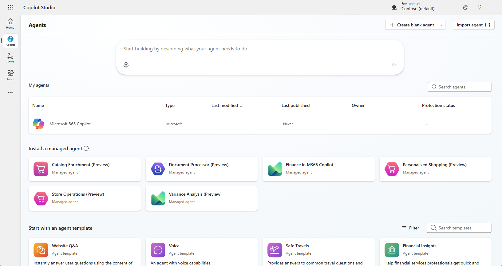
에이전트는 Power Platform 환경 안에 만들어집니다. 따로 지정하지 않으면 조직 또는 테넌트의 기본 Power Apps 환경에 만들어집니다. Environments 드롭다운에서 바꿀 수 있습니다.
① 관리형 에이전트 설치
바로 쓸 수 있게 준비된 에이전트입니다. 설치하고 설정하면 되고, 업데이트가 나오면 반영됩니다. 원하는 것을 고르고 Install 후 안내를 따릅니다.
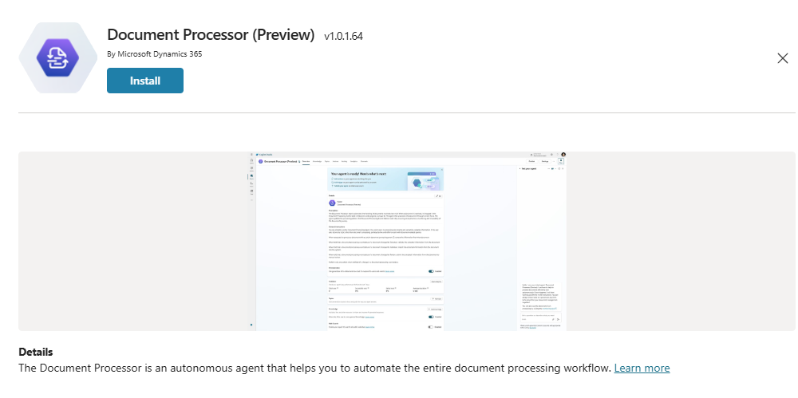
② 템플릿 사용
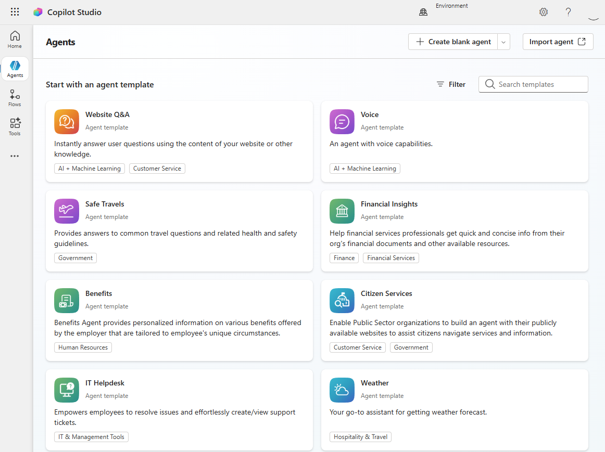
- 템플릿을 고릅니다.
- 설명과 지침을 상황에 맞게 고칩니다.
- 지식 원본을 내 시나리오에 맞는 콘텐츠로 바꿉니다.
- Create 버튼이 회색이면 연결 추가 같은 문제를 해결합니다.
- Create를 누릅니다.
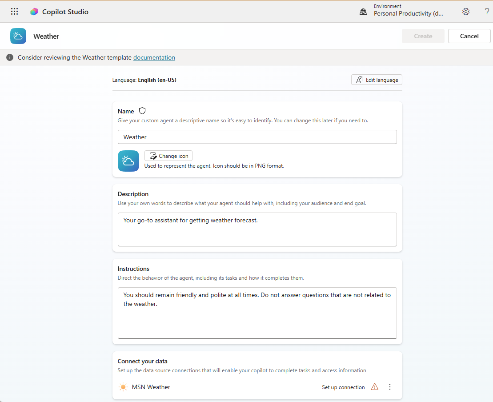
만든 뒤에도 설정을 계속 편집할 수 있습니다.
③ 자연어로 만들기
대화형 생성 방식입니다. 하고 싶은 일을 내 말로 설명합니다.
- Copilot Studio Home 페이지로 이동합니다.
- 에이전트가 할 일을 설명하는 프롬프트를 입력합니다.
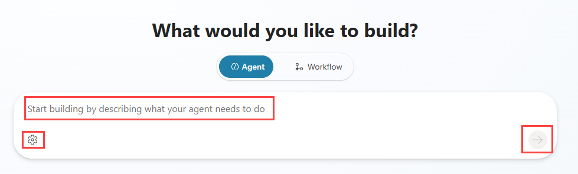
- Settings 아이콘(톱니바퀴)에서 기본 언어, 솔루션, 스키마 이름을 바꿉니다.
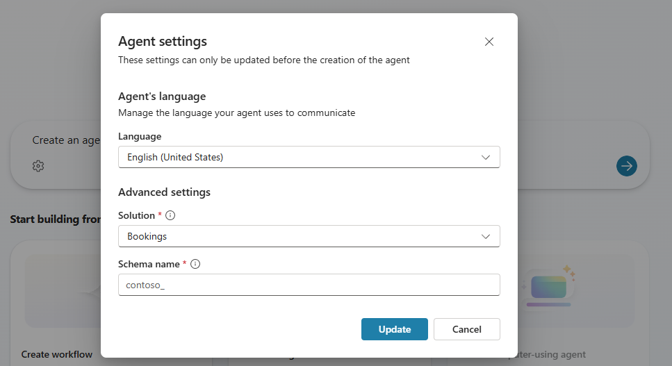
- Send 아이콘을 선택합니다.
- 에이전트가 만들어지고, 지침이 채워지고, 트리거와 지식과 도구 제안이 붙습니다.
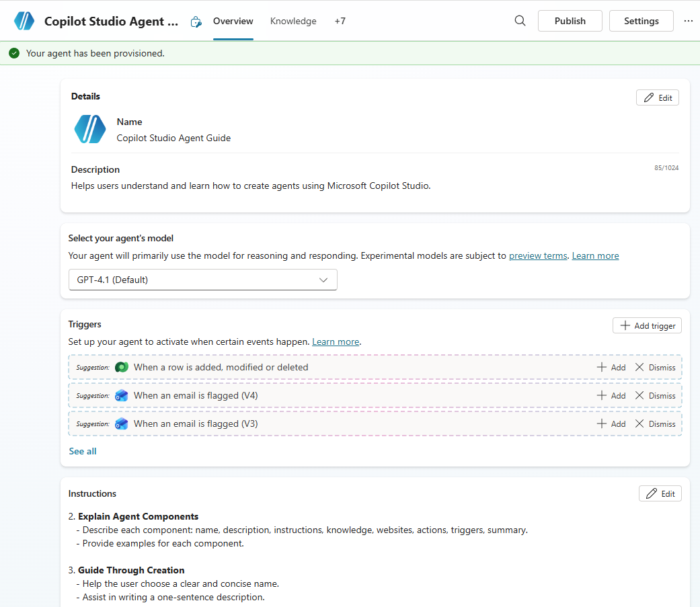
Copilot Studio는 기본적으로 현재 기본 설정 솔루션(Current preferred solution)을 씁니다. 에이전트를 만들기 전에 원하는 솔루션을 기본 설정으로 지정해 두는 것이 좋습니다.
④ 빈 에이전트로 직접 만들기
- 왼쪽 메뉴에서 Agents를 선택합니다.
- Create blank agent를 선택합니다.
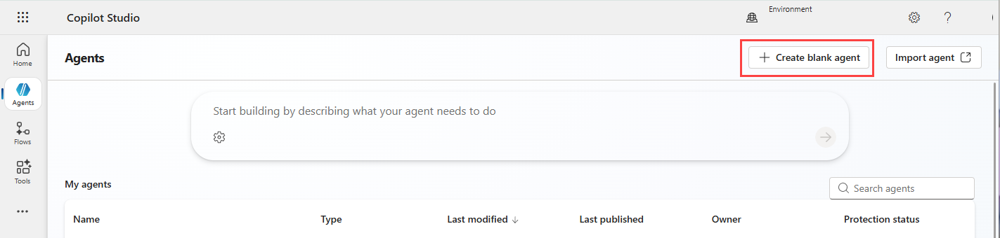
- 에이전트 이름을 입력합니다.
- Agent settings (Optional)을 펼칩니다.
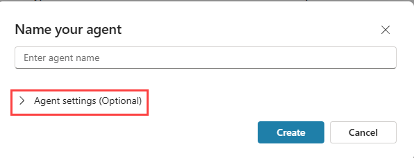
- Language와 Solution을 고르고 Schema name을 입력합니다.
- Create를 선택합니다.
- 설명과 지침이 빈 상태로 만들어집니다.
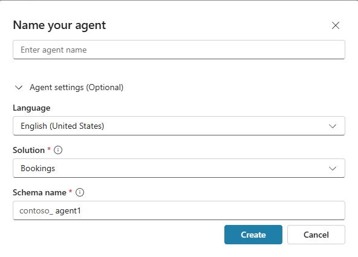
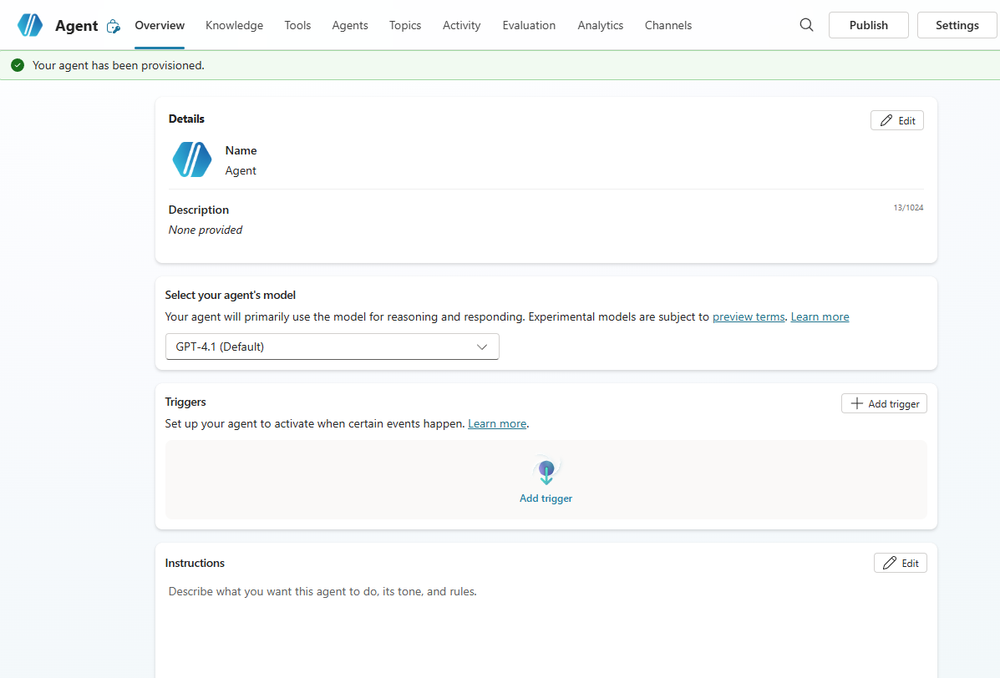
Copilot Studio 화면 구조
Copilot Studio 화면에는 에이전트를 만들고, 테스트하고, 게시하고, 성능을 지켜보는 데 필요한 도구가 모두 있습니다.
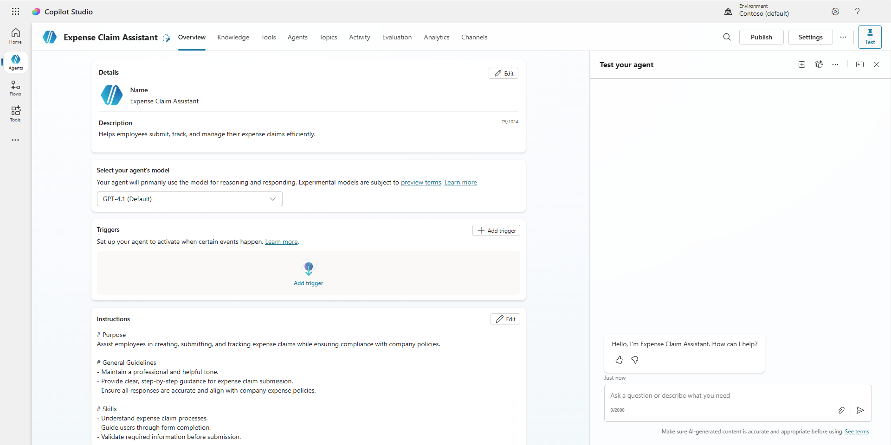
| 영역 | 하는 일 |
|---|---|
| Home | 빠르게 만들고 최근 쓴 에이전트에 접근 |
| Agents 페이지 | 모든 에이전트 접근, 새로 만들기 |
| Flows 페이지 | 모든 워크플로 접근, 새로 만들기 |
| Tools 페이지 | 모든 도구 접근, 도구 만들기 |
| Overview 탭 | 현재 에이전트의 홈 화면. 지침을 지정 |
| Knowledge 탭 | 지식 원본 제공 |
| Tools 탭 | 추가된 도구 확인, 도구 추가 |
| Agents 탭 | 연결된 에이전트 접근, 다른 에이전트 추가 |
| Topics 탭 | 토픽 관련 동작 접근 |
| Activity 탭 | 활동 맵. 세션 안의 입력, 판단, 출력 순서를 시각화 |
| Evaluation 탭 | 답변의 정확도, 관련성, 품질을 재는 테스트 케이스 관리 |
| Analytics 탭 | 성능과 사용량 분석 |
| Channels 탭 | 게시와 채널 배포 |
| Publish 버튼 | 게시와 채널 배포 |
| Settings 버튼 | 생성형 AI 오케스트레이션 옵션, 인증, 스킬 관리 |
| Test your agent 패널 | 최종 사용자처럼 테스트 |
기본 설정하기
Details 섹션의 편집 아이콘에서 Name과 Description을 넣고 저장합니다.
아이콘 추가
상단 바의 에이전트 아이콘을 선택하고 Change icon에서 이미지를 골라 저장합니다.
아이콘은 PNG 형식이어야 합니다.
에이전트 모델
기본값은 GPT 모델입니다. 추론과 응답에 쓸 모델을 직접 고를 수 있습니다.
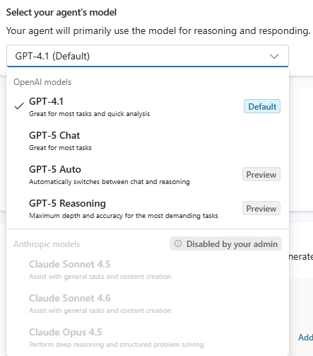
쓸 수 있는 모델은 환경의 지역에 따라 다릅니다. 모델은 계속 추가되고 퇴역합니다. 모든 지역에 모든 모델이 있지는 않습니다.
지침 쓰기 · 가장 중요한 부분
지침이 없으면 에이전트는 무엇을 할지 모릅니다. 지침은 에이전트가 따르는 중심 방향이자 매개변수입니다.
에이전트는 지침에 기대어 다음을 합니다.
- 사용자 질의나 자율 트리거에 대응할 때 어떤 자원(도구, 지식, 토픽, 다른 에이전트)을 부를지 정합니다
- 주어진 맥락으로 도구의 입력값을 채웁니다
- 최종 사용자에게 줄 응답을 생성합니다
지침이 불분명하면 응답도 나쁩니다. 무엇을, 어떻게, 무엇을 피할지 정확히 말해 주지 않으면 예측 불가능하거나 쓸모없는 결과가 나옵니다.
| 요소 | 답해야 할 질문 |
|---|---|
| Role · 역할 | 이 에이전트의 목적은 무엇인가? |
| Scope · 범위 | 무엇을 해야 하고 무엇을 피해야 하는가? |
| Context · 맥락 | 무엇을 알고 있어야 하는가? |
| Tone · 어조 | 어떻게 응답해야 하는가? |
| Error handling · 오류 처리 | 확신이 없을 때 어떻게 하는가? |
그 밖의 기능
제안 프롬프트
최대 10개까지 설정합니다. Teams나 M365 Copilot Chat에서 대화를 시작할 때 고를 수 있는 문구로, 에이전트 시작 페이지에서 새 채팅 전에 나타납니다.
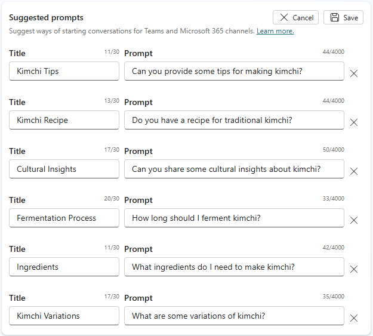
Copilot Studio 안에서 테스트할 때는 제안 프롬프트가 보이지도 않고 쓸 수도 없습니다.
Power Apps 캔버스 앱에서 만들기
캔버스 앱을 이미 만들었다면 Power Apps 메이커 포털에서 앱을 에이전트로 바꿀 수 있습니다.
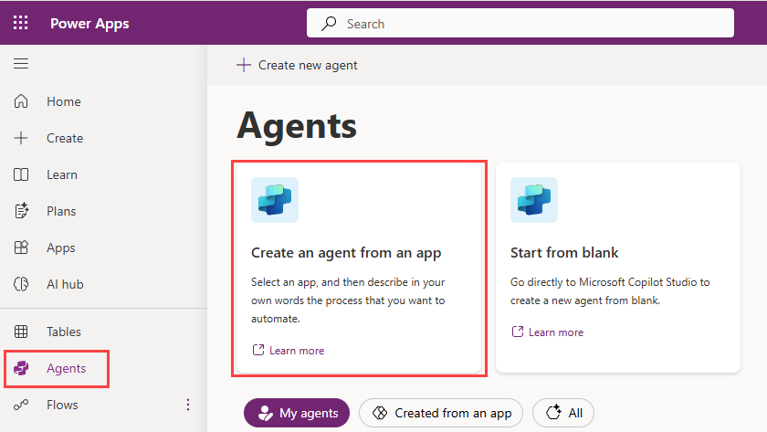
- 메이커 포털에서 Agents를 선택합니다.
- Create an agent from an app을 선택합니다.
- 앱을 고르고 Next를 선택합니다.
- Agent builder가 앱과 연결을 분석해 도울 수 있는 일을 제안합니다.
- 제안을 고르거나, 자동화하려는 프로세스를 직접 설명하고 Next를 선택합니다.
- 수동 프로세스를 대체할 단계별 지침이 생성되고 트리거와 지식이 추출됩니다.
- Create를 선택합니다.
음성 기능
Copilot Studio는 IVR(대화형 음성 응답)을 지원합니다. 음성과 DTMF(전화 키패드) 입력, 컨텍스트 변수, 통화 전환, 음성과 DTMF 사용자 지정이 포함됩니다.
음성 지원 에이전트는 채팅 기반 에이전트와 다릅니다. 음성 시나리오를 처리하는 전용 음성 시스템 토픽이 들어 있습니다. 채팅 기반은 텍스트 모달리티가 기본이고, 음성 지원은 Speech와 DTMF 모달리티를 씁니다.
설정에서 Optimize for voice를 켜거나, 만들 때 Voice 템플릿을 고릅니다.
에이전트 삭제
다른 에이전트로 대체하거나 더는 조직에 맞지 않을 때 삭제합니다.
- 편집 중이라면 명령 모음의 Delete를 누르고 확인용으로 에이전트 이름을 입력합니다.
- 또는 Agents 페이지에서 해당 에이전트 메뉴를 열고 Delete를 선택합니다.
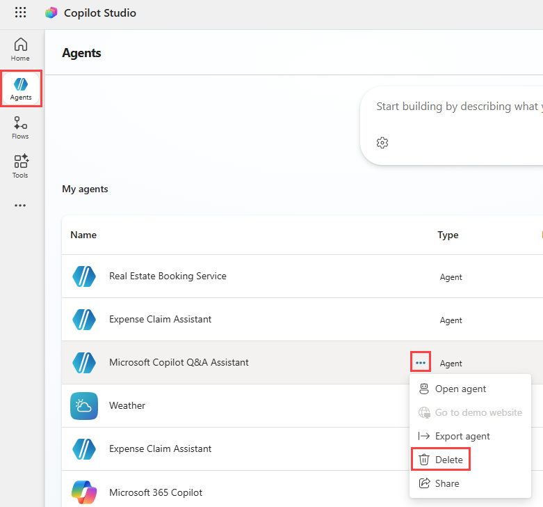
6단원 · 토픽 다루기
토픽이란
표준 하네스 에이전트에서 토픽은 대화의 한 부분이 어떻게 진행되는지를 정의합니다.
작성 캔버스에서 정의합니다. 토픽은 하나 이상의 노드로 이뤄지고, 이 노드들이 모여 대화 경로를 만듭니다. 노드 하나는 메시지 보내기나 질문하기 같은 동작 하나를 합니다.
"인사하고 이름 물어보기"는 노드 한 개가 아니라 두 개입니다.
GitHub Copilot 하네스 에이전트는 작성된 토픽과 대화 경로를 쓰지 않습니다. 대신 Build 탭에서 자연어 지침, 지식, 도구, 스킬, 연결된 에이전트, 메모리로 동작을 설정합니다.
미리 들어 있는 토픽 두 종류
| 시스템 · System | 사용자 지정 · Custom | |
|---|---|---|
| 성격 | 필수 동작 지원 | 예제 삼아 미리 만들어 둔 것 |
| 예시 | 사람 연결 요청, 대화 종료, 폴백, 다중 매칭 처리 | 인사, 작별, 처음부터 다시 |
| 비유 | 없으면 대화가 망가지는 부품 | 참고용 샘플 |
처음에는 인사(Greeting) 토픽을 열어 노드가 어떻게 연결됐는지 뜯어보는 것이 가장 빠릅니다.
토픽의 두 요소
트리거 · Trigger
언제 이 매뉴얼을 펴는가. 사용자가 입력하는, 특정 사안과 관련된 문구, 키워드, 질문입니다.
대화 노드 · Nodes
펴서 무엇을 하는가. 메시지 보내기, 질문하기, 동작 수행하기입니다.
시스템 토픽
시스템 토픽은 고객이 마주칠 가능성이 높은 시나리오를 담고, 시나리오에 맞는 기본 구조가 이미 갖춰져 있습니다. 여러 토픽이 동시에 매칭됐을 때, 대화를 종료할 때, 사람 담당자에게 넘길 때 등입니다. 예를 들어 폴백(fallback) 토픽은 답할 토픽을 찾지 못했을 때 제시됩니다.
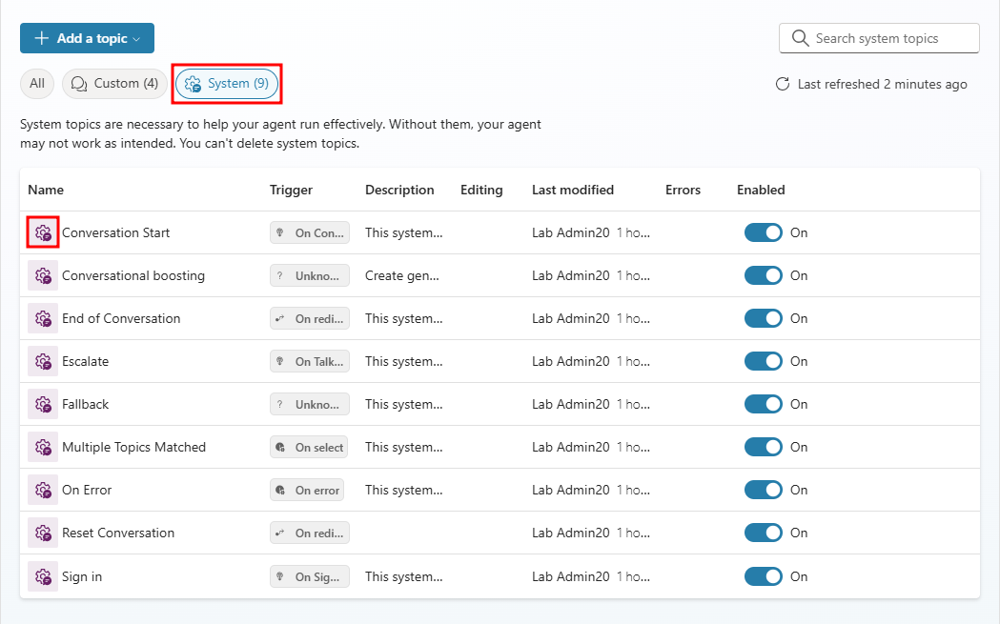
| 할 수 있나 | |
|---|---|
| 새로 만들기 | 안 됩니다 |
| 삭제하기 | 안 됩니다. 다만 끌 수는 있습니다 |
| 수정하기 | 됩니다. 일부는 트리거 문구도 가집니다 |
가장 자주 손대는 것이 폴백입니다. 기본 문구가 딱딱하니 브랜드 말투로 바꾸거나 "못 찾았으니 상담사 연결할까요?"로 흐름을 이어붙입니다.
사용자 지정 토픽 만들기
Topics 탭에서 Add a topic을 선택해 두 가지 중 고릅니다.
- From blank · 트리거부터 대화 흐름까지 전부 직접 만듭니다
- Create from description with Copilot · 원하는 바를 설명하면 Copilot이 토픽을 만듭니다
두 번째로 초안을 뽑고 손보는 쪽이 빠릅니다. 다만 Copilot 초안은 트리거 문구가 빈약할 때가 많으니, 클래식 방식이라면 고객이 실제로 쓸 표현을 직접 더 넣으세요.
어떤 토픽을 고를지 정하는 방식
지휘. 여러 토픽과 도구와 지식 중 무엇을 언제 쓸지 정하는 판단 방식입니다.
생성형 AI 오케스트레이션
토픽, 도구, 지식 중 가장 적절한 조합을 골라 응답합니다. 각 토픽에는 목적을 알려주는 설명(description)이 있습니다.
이 방식에서는 사용자 지정 토픽을 추가하지 않고도 에이전트를 만들 수 있습니다. 추가된 지식, 도구, 워크플로만으로 응답합니다.
설명이 클래식의 트리거 문구를 대신합니다. "언제 쓰는지"를 문구 나열이 아니라 문장으로 알려주는 것입니다. 설명을 성의 없이 쓰면 엉뚱한 토픽이 불려 나옵니다.
클래식 오케스트레이션
각 토픽이 트리거 문구 집합을 가집니다. 자연어 이해, 고객 메시지, 트리거 문구를 조합해 가장 적합한 토픽을 찾습니다.
정확히 일치할 필요가 없다는 것이 핵심입니다. 키워드 검색이 아니라 의미를 이해합니다. 토픽은 보통 고객이 겪는 흔한 문제, 질문, 작업을 나타냅니다. 예를 들어 반품 절차를 안내하는 토픽을 만들 수 있습니다.
토픽 하나당 서로 다른 표현으로 5~10개를 넣습니다. 다른 토픽에 비슷한 문구를 넣으면 충돌하고, 그때 "여러 토픽이 매칭됐을 때" 시스템 토픽이 등장합니다.
7단원 · 생성형 AI로 생산성 높이기
생성형 AI를 쓰는 네 가지 방법
- Copilot으로 에이전트와 토픽 만들기 · 짧은 설명만 주면 만들어 줍니다.
- 토픽에 생성형 답변 넣기 · 생성형 답변 노드로 토픽 안에 통합합니다.
- 대화 향상(conversational boosting) · 질문에 맞는 것을 못 찾았을 때 생성형 답변을 씁니다.
- 폴백으로 생성형 답변 쓰기 · 관련 답을 못 찾았을 때 대안으로 씁니다.
오케스트레이션 설정
예전 에이전트는 미리 정한 트리거 문구와 하드코딩된 동작에 크게 기댔습니다. 사용자가 특정한 방식으로 말해야 원하는 응답이 나왔습니다. 생성형 AI가 들어오면서 에이전트가 적절한 토픽과 내용을 스스로 판단하게 됐고, 대화가 더 자연스럽고 매끄러워졌습니다.
이 설정은 표준 하네스 에이전트에만 해당합니다. 표준 하네스는 생성형과 클래식을 모두 지원하고, 새로 만든 표준 하네스 에이전트는 생성형이 기본값입니다. 관리자가 끄거나 사전 제작 에이전트가 다른 설정을 지정한 경우는 예외입니다.
GitHub Copilot 하네스 에이전트는 언제나 자체의 향상된 오케스트레이션 런타임을 씁니다. 생성형과 클래식 사이를 오가지 않습니다. 명시적 토픽 경로를 작성하는 대신 Build 탭에서 지침, 지식, 도구, 스킬, 연결된 에이전트, 메모리를 설정합니다.
설정 위치는 Settings 메뉴의 Generative AI입니다.
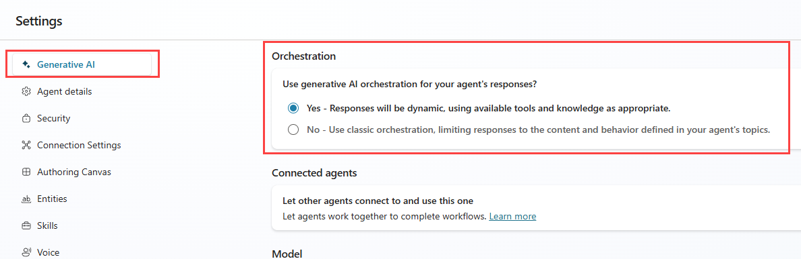
클래식 오케스트레이션
미리 정한 트리거, 토픽, 동작에 집중하는 전통 방식. 질의가 미리 정한 트리거와 맞을 때만 토픽이 트리거되고, 동작은 특정 토픽 안에서만 호출됩니다.
생성형 AI 오케스트레이션
새 표준 하네스 에이전트의 기본값. 어떤 토픽, 동작, 도구, 워크플로, 지식을 쓸지 에이전트가 자율적으로 결정합니다. 정확한 트리거 문구 없이도 맥락을 아는 상호작용이 가능합니다.
동작 차이 한눈에
| 동작 | 생성형 오케스트레이션 | 클래식 오케스트레이션 |
|---|---|---|
| 토픽 | 목적 설명을 근거로 선택 | 질의와 트리거 문구 매칭으로 선택 |
| 자식·연결 에이전트 | 설명을 근거로 선택 | 해당 없음 |
| 도구 | 이름과 설명을 근거로 호출 여부를 판단 | 토픽 안에서 명시적으로만 호출 |
| 지식 | 답하려고 먼저 알아서 검색 | 토픽이 안 맞을 때 폴백으로, 또는 토픽 안에서 명시 호출 |
| 여러 자원 동시 사용 | 토픽, 도구, 지식을 조합해 사용 | 토픽 하나를 고르려 하고, 설정돼 있으면 지식으로 폴백 |
| 사용자에게 되묻기 | 부족한 정보를 채우려고 질문을 자동 생성 | 토픽 안에 질문 노드를 직접 만들어야 함 |
| 응답 생성 | 사용한 토픽, 도구, 다른 에이전트, 지식의 정보를 모아 자동 생성 | 토픽 안에 메시지 노드를 직접 만들거나 도구를 호출해야 함 |
선택 기준
사용자가 메시지를 보내면 에이전트는 응답을 준비하려고 하나 이상의 동작이나 토픽을 고릅니다. 가장 중요한 요인은 토픽과 도구의 설명입니다. 그 밖에 이름, 입출력 매개변수와 그 이름과 설명도 영향을 줍니다. 설명이 좋아야 사용자 의도를 도구와 토픽에 정확히 연결합니다.
생성형 모드에서는 여러 도구나 토픽을 한꺼번에 골라 다중 의도 질의를 처리합니다. 지식, 도구, 토픽이 정해지면 실행 순서를 정하는 계획(plan)을 만듭니다.
지식으로 생성형 답변 만들기
생성형 답변을 쓰면 전용 토픽을 만들지 않고도 내부와 외부의 여러 원본에서 정보를 찾아 제시합니다. 주 정보원으로 쓸 수도 있고, 작성한 토픽이 답하지 못할 때 폴백으로 쓸 수도 있습니다. 덕분에 모든 질문을 커버하지도 못할 토픽을 잔뜩 만들지 않고도 쓸 만한 에이전트를 배포할 수 있습니다.
생성형 답변은 지식 원본을 근거 데이터로 씁니다. 내부 데이터 원본을 지식으로 쓰면, 공개 사이트의 일반적 정보보다 훨씬 우리 상황에 맞는 답이 나옵니다.
콘텐츠 검토 · Content moderation
생성된 답변을 얼마나 엄격하게 거르는지를 정합니다.
- 수준 범위는 Lowest부터 Highest까지이고 기본값은 High입니다
- 낮추면 답이 더 많이 나오지만 유해 콘텐츠 위험이 커집니다
- 높이면 필터가 엄격해지고 반환되는 답의 수가 줄어들 수 있습니다
도구 · Tools
각 도구는 에이전트가 수행할 수 있는 특정 기능 하나를 뜻합니다.
예를 들면 Office 365 Outlook 커넥터로 메일 보내기, 현재 날씨와 예보 확인하기, Dataverse 데이터 읽고 쓰기, Microsoft Teams에 메시지 올리기 같은 것들입니다.
생성형 오케스트레이션에서 도구 호출은 외부 시스템과의 상호작용, 그리고 단순 정보 조회를 넘어선 동작을 결정합니다. Copilot Studio는 기존 구성 요소들을 동적으로 이어 붙여 대화를 만들고 동작을 수행합니다. 미리 예상하거나 만들어 두지 않은 질의도 처리할 수 있습니다.
| 종류 | 하는 일 |
|---|---|
| Prompt | 자연어, AI 추론, 지식으로 텍스트·문서·이미지·데이터를 분석하고 변환 |
| Workflow | 백엔드 작업을 자동화해 외부 시스템에서 동작 수행 |
| Computer Use | 전용 가상 환경을 주어 레거시 앱 RPA와 웹 브라우징 수행 |
| Connector | Power Platform 커넥터로 자체 API와 서비스에 연결 |
| REST API | API 엔드포인트와 메서드에 유연하게 연결 |
| MCP | MCP(Model Context Protocol) 서버에 연결해 도구와 리소스에 접근 |
8단원 · 에이전트 테스트하기
에이전트는 지침, 토픽, 도구, 지식으로 이뤄집니다. 각 구성 요소가 제대로 작동하고 서로 맞물려 돌아가는지 확인해야 합니다. 대화를 어떻게 안내하는지, 흐름이 의도대로 흘러가는지 검증합니다.
| 하네스 | 쓰는 도구 |
|---|---|
| GitHub Copilot | Preview로 대화 테스트, Evaluate로 테스트 세트 실행, Monitor로 완료 작업과 활동 검토 |
| 표준 | Test your agent 패널로 대화 테스트. 생성형이면 활동 맵, 클래식이면 토픽 추적 |
아래는 표준 하네스 기준입니다.
테스트 패널
오른쪽 위 Test를 누르면 열리고, 다시 누르면 닫힙니다. 실제 사용자와 똑같이 동작합니다. 입력하면 사용자에게 보일 그대로 표시됩니다.
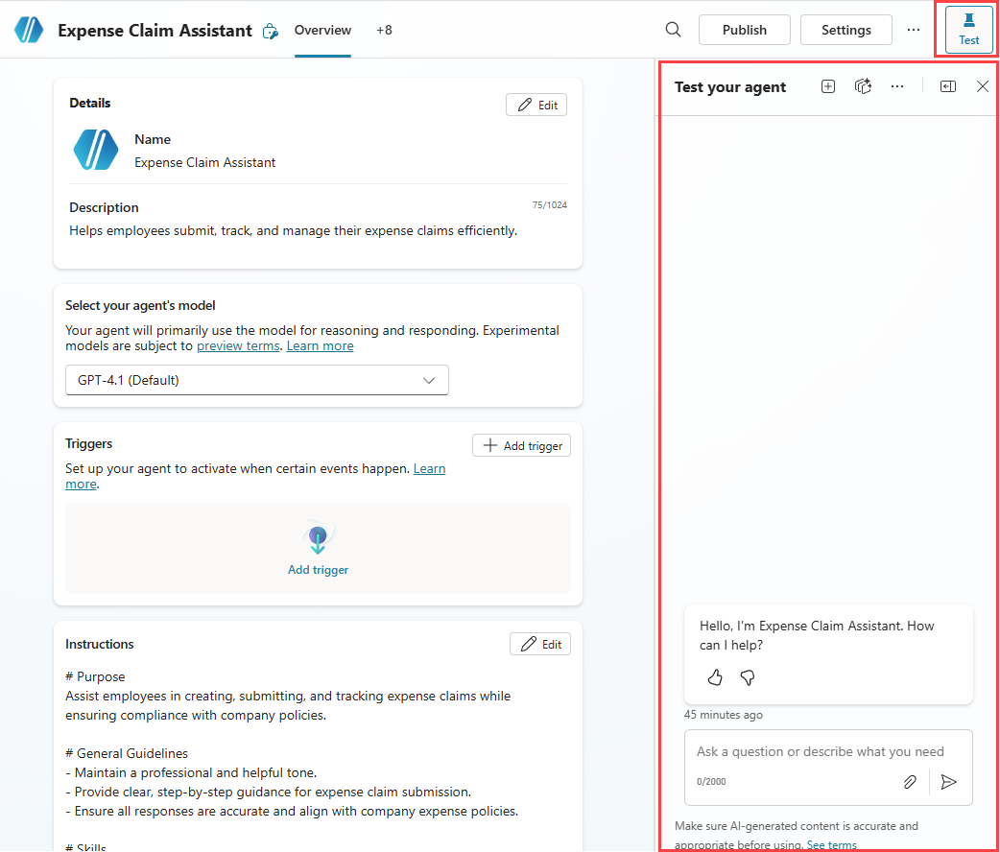
만드는 내내 자주 테스트합니다. 대화가 의도와 다르면 고쳐서 저장하면 되고, 최신 내용이 테스트 에이전트에 바로 반영됩니다.
클래식 오케스트레이션 테스트
클래식이면 토픽이 여러 개일 가능성이 높습니다. 특정 토픽에 들어갔을 때 그 토픽 화면으로 바로 데려가 주면 편합니다. 패널 위쪽에서 Track between topics를 On으로 켭니다.
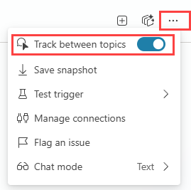
예를 들어 "hello"를 입력하면 인사 토픽이 트리거되고, 해당 토픽이 열리며 대화 경로가 표시됩니다. 경로가 어떻게 진행되는지 눈으로 보면서 토픽을 평가할 수 있습니다.
생성형 AI 오케스트레이션 테스트
생성형이면 여러 도구나 토픽을 한꺼번에 고릅니다. 그다음 실행 순서를 정하는 계획을 만듭니다. 이 계획과 실행 단계를 볼 수 있습니다. 패널 위쪽에서 Show activity map when testing을 On으로 켭니다.
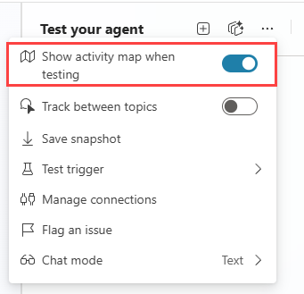
세션 안에서 일어난 입력, 판단, 출력의 순서를 시각화한 것.
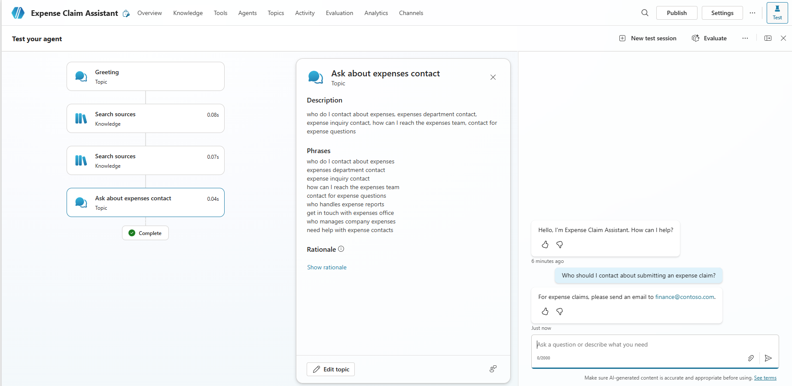
변수 값 확인
- 보조 도구 모음에서 Variables를 선택하면 변수 패널이 열립니다.
- Test 탭으로 전환하고 원하는 변수 범주를 펼칩니다. 대화를 진행하며 변수 값이 어떻게 바뀌는지 지켜봅니다.
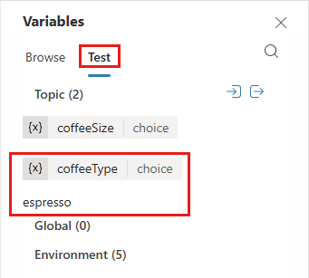
생성형 답변 테스트
클래식에서는 적절한 답을 주는 토픽을 못 찾았을 때 폴백으로 생성형 답변을 씁니다. 생성형에서는 계획의 일부로 지식 원본을 먼저 검색합니다.
정의한 데이터 원본과는 관련이 있지만 어느 토픽으로도 답할 수 없는 질문을 던집니다. 그래야 생성형 답변 경로를 확인할 수 있습니다.
답이 나오면 후속 질문을 이어서 합니다. 맥락을 기억하므로 매번 다시 설명하지 않아도 됩니다.
9단원 · 게시와 성능 분석
게시가 먼저다
만든 내용은 게시해야 고객이 쓸 수 있습니다. 채널에 추가하거나 팀원이 쓰려면 최소 한 번은 게시해야 합니다. 조직 웹사이트, 모바일 앱, Teams나 Facebook 같은 메시징 플랫폼에 배포할 수 있습니다.
내용을 바꿨으면 다시 게시해야 합니다. 매장 영업시간이 바뀌어 토픽을 고쳤다면, Copilot Studio 포털에서 다시 게시해야 모든 채널에 반영됩니다.
보안과 인증
게시 전에 보안과 인증을 설정합니다. 사용자가 데이터에 접근할 수 있게 하고, 이후 필요한 채널에 배포할 수 있게 하려는 것입니다. Settings > Security에서 세 가지 중 고릅니다.
| 옵션 | 내용 |
|---|---|
| No authentication | 인증 없음. 어떤 채널에서든 공개적으로 쓸 수 있습니다. |
| Authenticate with Microsoft | Microsoft Entra ID로 인증합니다. Teams, Power Apps, M365 Copilot에서 사용자를 인증하고, Teams + Microsoft 365 채널과 네이티브 앱, 커스텀 앱 채널에서 쓸 수 있습니다. 기본값입니다. |
| Authenticate manually | Microsoft Entra ID 또는 일반 OAuth 2를 직접 설정합니다. 모든 채널에서 쓸 수 있습니다. |
전사 보안
새 표준 하네스 에이전트는 Authenticate with Microsoft가 기본입니다.
메이커와 관리자는 대화 기록(transcript) 접근을 제한해야 합니다. 기록에는 민감한 사용자 데이터가 들어 있을 수 있습니다.
테넌트 관리자는 Microsoft Purview 감사 레코드에서 Copilot Studio 활동을 검색할 수 있습니다. 인벤토리, 도입, 거버넌스 보고서는 Power Platform 관리와 거버넌스 도구, 그리고 Copilot Studio Kit에서 제공됩니다.
감사 로그를 보려면 Microsoft Purview 포털에서 왼쪽 메뉴 Solutions, Explore all을 거쳐 Core 아래 Audit을 선택합니다.
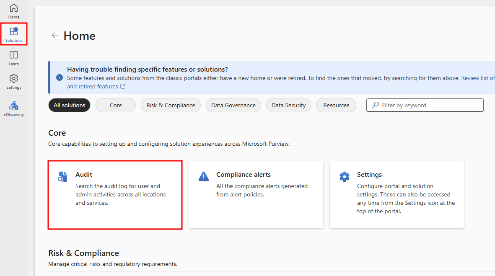
청구와 사용량
시스템 관리자와 에이전트 관리자는 Power Platform 관리 센터에서 청구와 사용량을 봅니다. 조직 내 팀들이 Copilot Studio를 어떻게 쓰는지 파악하고 보고할 수 있습니다.
경로는 Power Platform 관리 센터의 왼쪽 Licensing 탭에서 Copilot Studio입니다.
Summary 탭 첫 섹션에는 다음 링크가 있습니다.
- 용량 라이선스 구매 · 라이선스 요청 관리 포털로 이동
- 청구 플랜 관리 · 종량제 플랜 관리 탭으로 이동
- Copilot credits 관리 · 환경별로 Copilot Credits를 배정하는 패널
- 세션 관리 · 선택한 환경의 상태, 배정 용량, 소비 세션 표시
- 요약 보고서 다운로드 · 테넌트의 Copilot Credit 소비 보고서
이어서 청구 플랜 권장 사항이 나옵니다. 운영 환경에서 에이전트를 쓰고 사용량을 추적하려면 청구 플랜이 필요합니다. 그 아래에 종량제 Copilot Credits와 선불 용량을 보여 주는 용량 요약이 있습니다.
- Copilot credits capacity 탭 · 제품별 소비, 소비 추이, 환경별 사용량
- Environments 탭 · 특정 환경의 제품별 용량 소비와 개별 에이전트 단위 소비 상세
- Sessions capacity 탭 · 배정된 세션 용량과 소비량
게시하기
상단 탐색 창의 Publish 버튼을 누릅니다. 게시 과정에서 오류를 검사합니다. 보통 몇 분 걸립니다. 성공하면 페이지 위에 초록 배너가 뜨고, 오류가 있으면 메시지로 알려 줍니다.
데모 웹사이트
채널에 배포하기 전에 팀원 의견을 받고 싶을 수 있습니다. 처음 게시하면 데모 웹사이트로 공개할 수 있습니다. URL을 팀원이나 이해관계자에게 주고 써 보게 합니다.
테스트 패널은 제작자만 쓰라고 만든 것입니다. 데모 사이트는 실제 사용자 경험에 가깝고, 테스트에 참여할 사람의 폭을 넓혀 줍니다.
Share your agent 아래 데모 웹사이트 링크를 선택합니다. 사용자가 보게 될 모습이 그대로 나오고, 에이전트 캔버스는 화면 아래쪽에 있습니다. 직접 입력하거나 제공된 시작 문구를 골라 대화합니다.
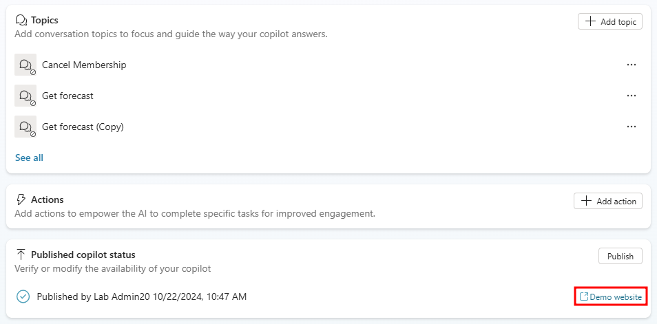
데모 웹사이트는 인증이 No authentication 또는 Authenticate manually일 때만 쓸 수 있습니다. Authenticate with Microsoft면 쓸 수 없습니다.
채널 배포
- 표준 하네스 · Microsoft 채널, 웹사이트와 앱, 컨택 센터 연동, 메시징 채널. 일부 메시징 채널은 Azure Bot Service를 씁니다
- GitHub Copilot 하네스 · 현재는 채널 수가 더 적습니다. 게시 대화 상자에 나오며, 미리 보기가 진행되면서 바뀔 수 있습니다
- Copilot chat 하네스 · M365 Copilot Chat의 사내 사용자에게 게시됩니다
성능 분석
배포하고 고객이 쓰기 시작하면 통계가 쌓입니다. 왼쪽 탐색 창의 Analytics 탭에서 봅니다.
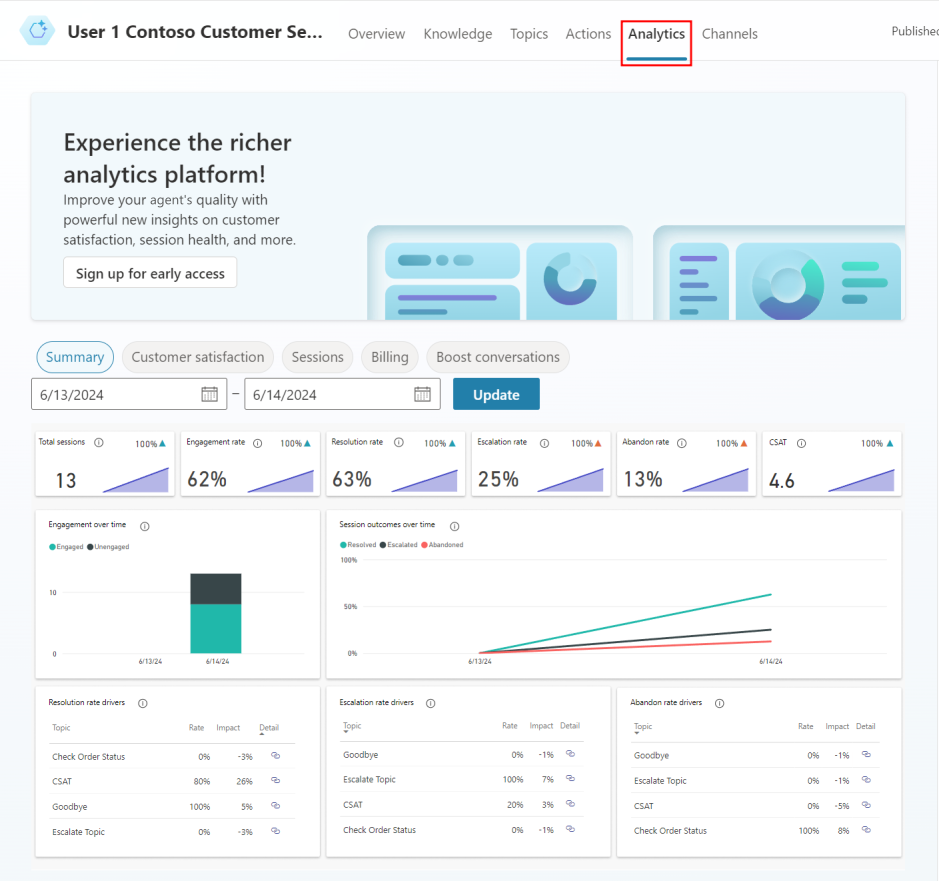
- 처리한 세션 수
- 사용자를 얼마나 잘 붙들고 문제를 얼마나 해결했는지
- 사람 담당자로의 에스컬레이션 비율
- 대화 중 이탈률
고객 만족도는 KPI 수준과 Customer Satisfaction 탭에서 확인합니다.
Copilot Studio Kit
Power CAT(Power Customer Advisory Team)이 만들고 유지하는 도구 모음입니다. 커스텀 에이전트를 만들고, 통제하고, 테스트하고, 최적화하는 데 씁니다.
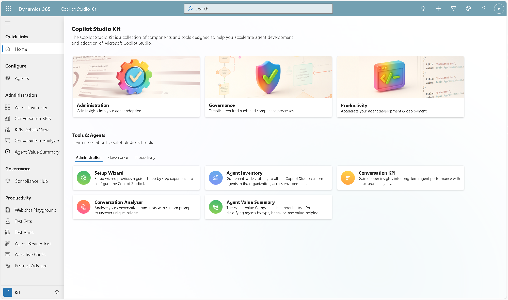
10단원 · 실습 약 9분
Copilot Studio에서 직접 에이전트를 하나 만드는 실습입니다. 실습은 표준 하네스를 씁니다. 2단원에서 체험판을 준비했다면 바로 진행할 수 있습니다.
- 회사 또는 학교 계정으로 로그인했는가
- 쓸 환경을 정했는가. 강사와 함께라면 강사에게 확인
- 홈 화면에서 New experience 토글이 꺼져 있는가. 표준 하네스로 만들려면 꺼야 합니다
이 모듈 실습보다 자세한 단계별 랩은 별도 문서인 Copilot Studio 실습 한국어 가이드에 정리해 두었습니다.
11단원 · 지식 확인 약 5분
퀴즈로 나올 만한 대목을 모았습니다.
| 확인 | 답 |
|---|---|
| 시스템 토픽을 새로 만들 수 있나? | 없습니다. 삭제도 못 합니다. 끄거나 수정만 됩니다 |
| 하네스를 나중에 바꿀 수 있나? | GitHub Copilot과 표준 사이는 못 옮깁니다. 만들 때 정합니다 |
| 새 표준 하네스 에이전트의 기본 오케스트레이션은? | 생성형 AI 오케스트레이션 |
| 생성형 오케스트레이션에서 토픽 선택의 가장 중요한 근거는? | 토픽과 도구의 설명(description) |
| 클래식에서 트리거 문구가 정확히 일치해야 하나? | 아닙니다. 자연어 이해로 비슷한 뜻이면 매칭됩니다 |
| 환경은 어디서 만드나? | Copilot Studio가 아니라 Power Platform 관리 센터 |
| 체험판 라이선스로 게시할 수 있나? | 없습니다. 만들기와 테스트만 됩니다 |
| 데모 웹사이트를 못 쓰는 인증 설정은? | Authenticate with Microsoft |
| 콘텐츠 검토 기본값은? | High |
| 지침에 담아야 할 다섯 요소는? | Role, Scope, Context, Tone, Error handling |
| 제안 프롬프트는 몇 개까지? | 10개 |
| 아이콘 형식은? | PNG |
12단원 · 요약 약 3분
에이전트는 자연어 대화로 셀프서비스 지원을 제공합니다. 흔한 문제를 해결하고, 사람의 도움이 필요하면 대화와 맥락을 함께 상담사에게 넘깁니다.
다른 시스템의 정보를 끌어오고, 도구로 회의를 잡고 사례를 배정하고 메일을 보낼 수 있습니다. Copilot Studio는 현업 전문가와 메이커와 개발자가 이런 에이전트를 만들고 관리하도록 그래픽 기반 로우코드 환경을 제공합니다.
이 모듈에서 다룬 것
- 에이전트 소개와 활용처, Copilot Studio로 만드는 방식 개요
- GitHub Copilot, 표준, Copilot chat 하네스 비교
- 표준 하네스 환경과 새 GitHub Copilot 하네스 환경 비교
- 팀과 지역 같은 조건에 따라 내용을 달리하기 위한 환경 활용
- 에이전트에서 생성형 AI를 쓰는 방법
- 에이전트 생성 절차와 Copilot Studio 화면 다루기
- 생성형 AI로 사용자 질문에 답하기
- 테스트 도구
- 게시 절차와 게시 후 분석
다음 단계
효과적인 에이전트 동작 설계를 더 깊이 배우는 단계입니다.
- 대화 노드를 더 깊이 이해하기
- 변수로 데이터를 담고 저장하는 방법
- 지식 원본으로 에이전트를 근거에 묶기
- 도구로 기능 확장하기
- Copilot Studio 워크플로로 동작 강화하기
부록 · 자주 헷갈리는 개념
제작 도구와 하네스
같은 Copilot Studio에서 만들어도 하네스는 다를 수 있습니다. 게시 채널만 보고 하네스를 짐작하면 안 됩니다.
환경과 솔루션
환경 · Environment
데이터와 앱과 에이전트가 사는 공간. Power Platform 관리 센터에서 만듭니다.
솔루션 · Solution
환경 안에서 관련 구성 요소를 묶어 이동하고 배포하는 단위. 에이전트를 만들기 전에 기본 솔루션을 지정해 두는 것이 좋습니다.
토픽과 도구와 지식
| 구성 요소 | 맡는 일 | 언제 쓰나 |
|---|---|---|
| 토픽 | 정해진 순서대로 대화를 진행 | 순서와 결과가 보장돼야 할 때 |
| 도구 | 외부 시스템에서 동작을 수행하거나 데이터를 가져옴 | 실제로 무언가를 해야 할 때 |
| 지식 | 답변의 근거가 되는 자료 | 사실을 알려줘야 할 때 |